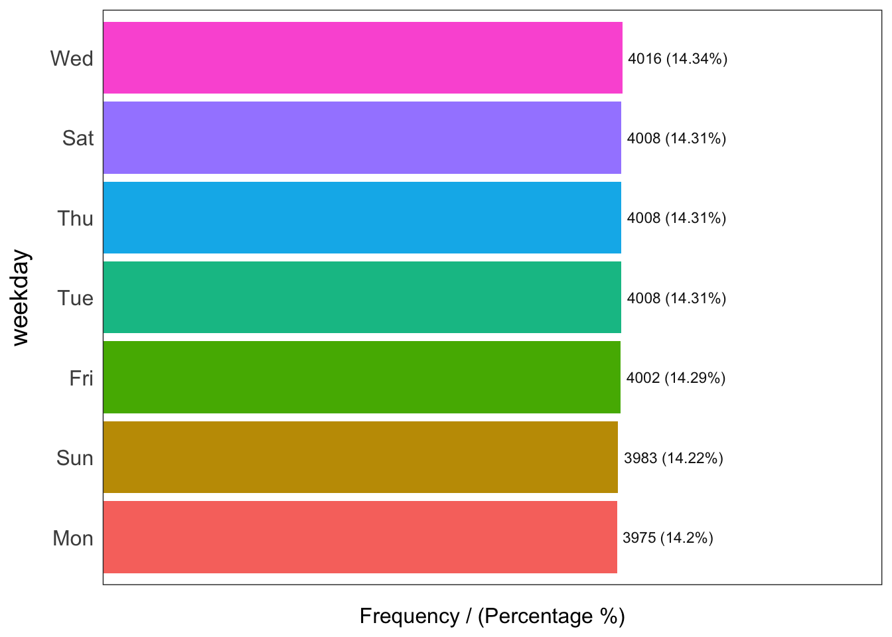
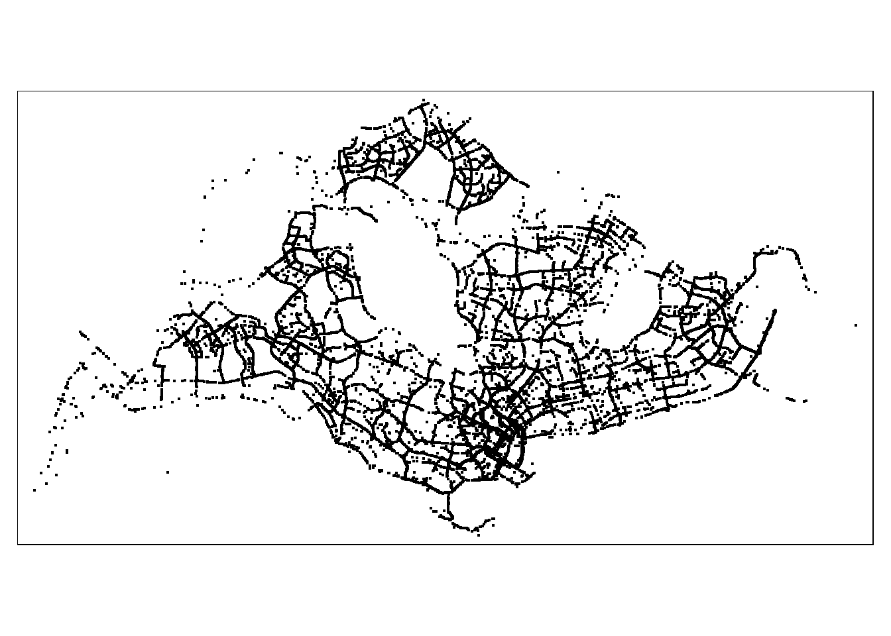

Show code
pacman::p_load(arrow, lubridate, tmap, tidyverse, sf, funModeling)The R packages that I will be using today are arrow, lubridate, tmap, tidyverse, sf and funModeling.
pacman::p_load(arrow, lubridate, tmap, tidyverse, sf, funModeling)We will be importing the dataset using read_parquet() function of arrow package.
We will then convert the data type of pingtimestamp from character to date-time.
df <- read_parquet("data/GrabPosisi/part-00000-8bbff892-97d2-4011-9961-703e38972569.c000.snappy.parquet")
df$pingtimestamp <- as_datetime(df$pingtimestamp)# write_rds(df, "data/rds/part0.rds")origin_df <- df %>%
group_by(trj_id) %>%
arrange(pingtimestamp) %>%
filter(row_number()==1) %>% # Arrange timestamp with earliest ping at the start for each trj_id(starting location)
mutate(weekday = wday(pingtimestamp,
label=TRUE,
abbr=TRUE),
start_hr = factor(hour(pingtimestamp)),
day = factor(mday(pingtimestamp)))destination_df <- df %>%
group_by(trj_id) %>%
arrange(desc(pingtimestamp)) %>%
filter(row_number()==1) %>% # Same as previous code but desc, so ending lcoation
mutate(weekday = wday(pingtimestamp,
label=TRUE,
abbr=TRUE),
end_hr = factor(hour(pingtimestamp)),
day = factor(mday(pingtimestamp)))write_rds(origin_df, "data/rds/origin_df.rds")
write_rds(destination_df, "data/rds/destination_df.rds")origin_df <- read_rds("data/rds/origin_df.rds")
destination_df <- read_rds("data/rds/destination_df.rds")We will be using freq() function of funModeling package on the variable ‘weekday’.
freq(data = origin_df,
input = 'weekday')
weekday frequency percentage cumulative_perc
1 Wed 4016 14.34 14.34
2 Tue 4008 14.31 28.65
3 Thu 4008 14.31 42.96
4 Sat 4008 14.31 57.27
5 Fri 4002 14.29 71.56
6 Sun 3983 14.22 85.78
7 Mon 3975 14.20 100.00origin_df# A tibble: 28,000 × 12
# Groups: trj_id [28,000]
trj_id driving_mode osname pingtimestamp rawlat rawlng speed bearing
<chr> <chr> <chr> <dttm> <dbl> <dbl> <dbl> <int>
1 70895 car android 2019-04-08 00:09:40 1.38 104. 6.80 41
2 21926 car android 2019-04-08 00:09:49 1.29 104. 10.8 68
3 47498 car ios 2019-04-08 00:09:52 1.38 104. 18.3 307
4 41322 car android 2019-04-08 00:10:00 1.28 104. 18.7 230
5 18103 car android 2019-04-08 00:10:09 1.45 104. 14.1 155
6 64813 car ios 2019-04-08 00:10:12 1.31 104. 19.8 109
7 81518 car ios 2019-04-08 00:10:16 1.31 104. 8.75 213
8 25201 car ios 2019-04-08 00:12:09 1.37 104. 12.6 202
9 66542 car android 2019-04-08 00:12:16 1.36 104. 13.9 179
10 82401 car android 2019-04-08 00:12:21 1.30 104. 12.7 109
# ℹ 27,990 more rows
# ℹ 4 more variables: accuracy <dbl>, weekday <ord>, start_hr <fct>, day <fct>origin_sf <- st_as_sf(origin_df,
coords = c("rawlng", "rawlat"),
crs=4326) %>%
st_transform(crs = 3414)tmap_mode("plot")
tm_shape(origin_sf) +
tm_dots()
mpsz2019 <- st_read("data/dataGov/MPSZ2019.kml") %>%
st_transform(crs = 3414)Reading layer `URA_MP19_SUBZONE_NO_SEA_PL' from data source
`/Users/jacksontan/Documents/Sashimii0219/IS415-GAA/In-class_Ex/In-class_Ex02/data/dataGov/MPSZ2019.kml'
using driver `KML'
Simple feature collection with 332 features and 2 fields
Geometry type: MULTIPOLYGON
Dimension: XY, XYZ
Bounding box: xmin: 103.6057 ymin: 1.158699 xmax: 104.0885 ymax: 1.470775
z_range: zmin: 0 zmax: 0
Geodetic CRS: WGS 84tm_shape(mpsz2019) +
tm_polygons() +
tm_shape(origin_sf) +
tm_dots()